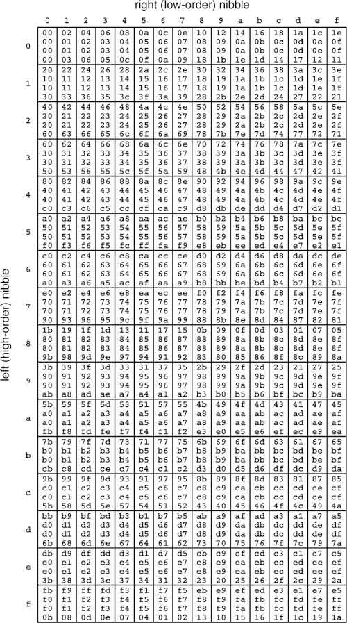

Networking Security Networking Security Networking Security Security Networking Security Networking Security Networking Charlie Kaufman Radia Perlman Mike Speciner Prentice Hall Network Security: Private Communication in a Public World, Second Edition Networking Security Networking Security Networking Security Security Networking Security Networking Security Networking Charlie Kaufman Radia Perlman Mike Speciner Prentice Hall Network Security: Private Communication in a Public World, Second Edition
3.5. Advanced Encryption Standard (AES)
The world needed a new secret key standard. DES's key was too small. Triple DES (3DES, see §4.4 Multiple Encryption DES) was too slow. IDEA was encumbered (i.e., had patent protection), suspect, and slow. The National Institute of Standards and Technology (NIST) decided it wanted to facilitate creation of a new standard, but it had at least as difficult a political problem as a technical problem. Years of some branches of the U.S. government trying everything they could to hinder deployment of secure cryptography was likely to raise strong skepticism if a branch of the government stepped forward and said We're from the government, and we're here to help you develop and deploy strong crypto. The following quote gives a hint as to the deep resentment and mistrust that previous crypto export policies and the threat of domestic controls on encryption created.
The NSA regularly lies to people who ask it for advice on export control. They have no reason not to; accomplishing their goal by any legal means is fine by them. Lying by government employees is legal.
ÂJohn Gilmore
NIST really did want to help create an excellent new security standard. The new standard should be efficient, flexible, secure, and unencumbered (free to implement). But how could it help create one? Staying out of the picture wouldn't help, since nobody else seemed to have the technical reputation and energy to lead the effort. Proposing an NSA-designed cipher, designed in secret, wouldn't work since everyone would speculate that there were trapdoors. So on January 2, 1997, NIST announced a contest to select a new encryption standard to be used for protecting sensitive, non-classified, U.S. government information. Proposals would be accepted from anyone, anywhere in the world. The candidate ciphers had to meet a bunch of requirements, including having a documented design rationale (and not just Here's a bunch of transforms we do on the data). Then there were several years in which conferences were held for presentation of papers analyzing the candidates. There was a group of highly motivated cryptographers (the authors of submitted entries) looking for flaws in the proposals. And NIST also ran tests of the candidates for performance and other characteristics.
After lots of investigation and discussion in the cryptographic community, NIST chose an algorithm called Rijndael, named after the two Belgian cryptographers who developed and submitted itÂDr. Joan Daemen of Proton World International and Dr. Vincent Rijmen, a postdoctoral researcher in the Electrical Engineering Department (ESAT) of Katholieke Universiteit Leuven [DAE99]. As of 26 November 2001, AES, a standardization of Rijndael, is a Federal Information Processing Standard [FIPS01].
Rijndael provides for a variety of block and key sizes. These two parameters can be chosen independently from 128, 160, 192, 224, and 256 bits. (in particular, key size and block size can be different). AES mandates a block size of 128 bits, and a choice of key size from 128, 192, and 256 bits , with the resulting versions imaginatively called AES-128, AES-192, and AES-256, respectively. We'll describe Rijndael, mentioning the AES parameters explicitly from time to time.
Rijndael is based on some beautiful mathematics, but we'll leave the discussion of the mathematics to §8.5 Mathematics of Rijndael. Rijndael is similar to DES and IDEA in that there is a series of rounds which mangles a plaintext block into a ciphertext block, and a key expansion algorithm that takes the key and massages it into a bunch of round keys.
3.5.1. Basic Structure
Rijndael allows a certain amount of flexibility by use of two independent parameters, with a third parameter derived from the other two:
The block size, Nb. This is the number of 32-bit words (4-octet columns) in an encryption block. AES has Nb = 4, because its 128-bit block size is four 32-bit words. The key size, Nk. This is the number of 32-bit words (4-octet columns) in an encryption key. AES-128 has Nk = 4, AES-192 has Nk = 6, AES-256 has Nk = 8. Rijndael allows any Nk between 4 and 8 inclusive. The number of rounds Nr. This parameter is a function of the other two parameters. The number of rounds needs to be larger for longer keys so that breaking the encryption is as difficult as a brute-force attack at that key size. The number of rounds needs to be larger for bigger block sizes (and key sizes) to allow sufficient mixing so that each bit of a plaintext block (or key) has a complex effect on each bit of the resulting ciphertext block. So Rijndael specifies that Nr = 6 + max(Nb, Nk). This means that AES-128 has ten rounds, AES-192 has twelve rounds, and AES-256 has fourteen rounds.
Rijndael (Figure 3-23) keeps a rectangular array of octets as its state. The state has Nb 4-octet columns. Initially, the state is filled column by column from the 4Nb-octet input block. The state is transformed in Nr rounds into a final state, which is then read out column by column as the output block. Before round 1, between rounds, and after round Nr is an  , into the state, of the next 4Nb octets from the expanded key, read out as columns. Rounds 1 through Nr-1 comprise an identical sequence of operations, while round Nr omits one of them. , into the state, of the next 4Nb octets from the expanded key, read out as columns. Rounds 1 through Nr-1 comprise an identical sequence of operations, while round Nr omits one of them.
The Rijndael key is a 4Nk-octet block. The key expansion algorithm flows the key, column by column, into Nk 4-octet columns, then proceeds to create additional columns until it has (Nr+1)Nb columns, the exact amount of expanded key required. Key expansion uses the same kinds of primitive operations as the rounds do.
Rows, columns, and round keys are numbered starting at 0. Round numbers start at 1.
3.5.2. Primitive Operations
Rijndael is based on four primitive operations.
An octet-for-octet substitution, called the S-box (see Figure 3-24)
A rearrangement of octets comprising rotating a row or column by some number of cells An operation called MixColumn, which replaces a 4-octet column with another 4-octet column. MixColumn can be implemented with a single table (Figure 3-26) containing 256 4-octet columns. Each of the four octets in an input column is used as an index to retrieve a column from the table; each column retrieved from the table is rotated vertically so that its top octet is in the same row as the input octet; and the four rotated columns are 'd together to produce the output column. (See Figure 3-25.) We'll describe MixColumn mathematically in §8.5 Mathematics of Rijndael.

3.5.2.1. What about the inverse cipher?
is its own inverse The inverse S-box is just given by a different table (see Figure 3-27)

The inverse of rotating a row or column is just rotating it the same amount in the opposite direction The inverse of MixColumn, called InvMixColumn, is just like MixColumn, but with a different table (Figure 3-28)
So the inverse cipher can clearly be implemented by applying the inverses of the primitive operations comprising the cipher in the opposite sequence from that in the cipher. But as it turns out, due to various mathematical properties (and by clever design), the inverse cipher can be made to look just like the forward cipher but with inverse operations, and with the round keys not just in reverse order, but having InvMixColumn applied to all but the first and last of them. This will be explained in §8.5 Mathematics of Rijndael.
3.5.3. Key Expansion
Key expansion starts with the key arranged as Nk 4-octet columns (see Figure 3-29) and iteratively generates the next Nk columns of the expanded key (see Figure 3-30). To generate the ith set of Nk columns (i starts at 1; the 0th set is the supplied key), all that is needed is the (i-1)th set. Column 0 of the new set is gotten by rotating the last column of the (i-1)th set upward one cell, applying the S-box to each octet, and then ing a constant based on i (see Figure 3-31) into octet 0. The rest of the columns in the set are generated in turn by ing the previous column with the corresponding column from the previous [(i-1)th] set. There is one exception to thisÂif Nk > 6, then an additional step is required to finish generating column 4, namely the application of the S-box to each octet (see Figure 3-32). Key expansion terminates as soon as (Nr+1)Nb columns of expanded key have been generated; this may happen in the middle of a set.
Figure 3-31. Rijndael key-expansion constants Cii = 1 thru 10: | 1 | 2 | 4 | 8 | 10 | 20 | 40 | 80 | 1b | 36 | i = 11 thru 20: | 6c | d8 | ab | 4d | 9a | 2f | 5e | bc | 63 | c6 | i = 21 thru 30: | 97 | 35 | 6a | d4 | b3 | 7d | fa | ef | c5 | (91) |
3.5.4. Rounds
Each round is an identical sequence of three operations:
Each octet of the state has the S-Box applied to it. Row 1 of the state is rotated left 1 column. Row 2 of the state is rotated left 2+ Nb/8 Nb/8 columns (2 if Nb < 8, 3 otherwise). columns (2 if Nb < 8, 3 otherwise). Row 3 of the state is rotated left 3+Nb/7 columns (3 if Nb < 7, 4 otherwise). (Note that for AES, this simplifies to rotating row i left i columns.) Each column of the state has MixColumn applied to it. Round Nr omits this operation.
3.5.5. Inverse Rounds
Since each operation is invertible, decryption can be done by performing the inverse of each operation in the opposite order from that for encryption, and using the round keys in the reverse order.
But as we mentioned earlier, we can make decryption have the same structure as encryption. To do this, we not only have to use the round keys in the opposite order, but we have to apply InvMixColumn to each column of all but the initial and final round keys. Then each inverse round is an identical sequence of three operations:
Each octet of the state has the inverse S-Box applied to it. Row 1 of the state is rotated right 1 column. Row 2 of the state is rotated right 2+Nb/8 columns (2 if Nb < 8, 3 otherwise). Row 3 of the state is rotated right 3+Nb/7 columns (3 if Nb < 7, 4 otherwise). (Note that for AES, this simplifies to rotating row i right i columns.) Each column of the state has InvMixColumn applied to it. Round Nr omits this operation.
3.5.6. Optimization
In the straightforward implementation of a round, each octet of the state undergoes a table-lookup to apply the S-Box, and the resulting octet is later used for another table-lookup as part of MixColumn. We can combine these into a single table-lookup that transforms an octet into the column found by applying the S-Box and looking up the result in the MixColumn table.
We can further optimize a round by retaining the old state while we compute the new state. We initialize the new state to the round key. For each octet in the old state, we perform the combined table-lookup and the resulting column (rotated downward by the old octet's row number) into the appropriate column of the new state. For the first row (row 0), this is the old octet's column. For the second row (row 1), it's the column one to the left. For the third row (row 2), it's either two or three columns to the left (depending on whether or not Nb < 8); and for the last row (row 3), it's either three or four columns to the left (depending on whether or not Nb < 7). When we've processed all the old octets, we've completed the round (including the following ).
The last round is a little different. We initialize the new state to the round key. For each octet in the old state, we apply the S-Box by table-lookup and the result into the appropriate octet of the new state. The destination octet is in the same row as the source octet, and its column depends on the source row and column in the same manner as for the other rounds.
The inverse rounds can be optimized in the same manner (with left replaced by right).
|


 6
6